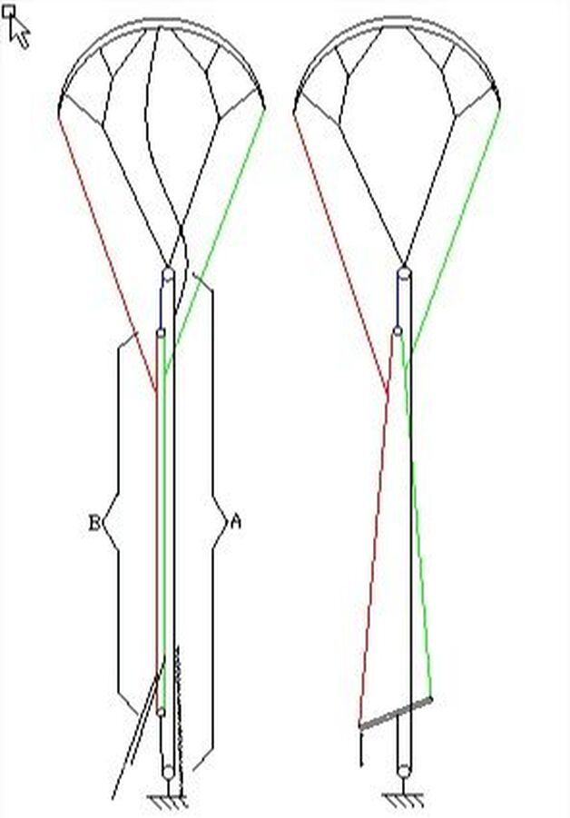
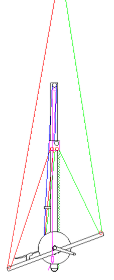

This invention purpose is to fully control a kite at high distance from the ground,
even while reeling it in and out.
The main known uses are for kiteboating and kite power generation.
even while reeling it in and out.
The main known uses are for kiteboating and kite power generation.
First I have to say that this invention is from and was developped in collaboration with Eric Beaudonnat who gracefully accepted that I unveel it in an open-source spirit.
I am quite surprised, disappointed and even scared that none of the leaders of kiteboating and kite power generation has developped it since then. What are they doing ? So little progress on these two huge potential markets in the last 10 years !
For 20 years, my analysis for kiteboating to become reality (a real market and not just experiments and niche markets) is that we need :
1/ a boat respecting the mechanics of kite traction. That's easy to do, has been described by several inventors in the past century, and the design possibilities are endless
2/ an Auto-Zenith kite. We can't rely 100% on electronics in marine environment. If electronics fails, accidents shouldn't happen
3/ a control device that allows perfect and total control of the kite whatever the distance between the boat and the kite
As of today, there are a few real kiteboats, no efficient Auto-Zenith kite, no good control device (from what I know)
It has to be understood that a 10m kite for example with a classic 4-line control device will start to lose its flight capabilities with 50m-long lines. With 100m-long lines it will become unfliable.
Why ? Because of the terrible aerodynamic drag on the rear lines. While the front lines receive most of the kite power, the rear lines receive much less and sometimes you even want them fully slack. But the wind pulls them as if you were pulling them. At a certain length, it is just like if you were strongly pulling them all the time so the kite will stall (fall backwards).
Larger the kite, higher it can go, that's why you can see videos on Youtube were huge kites with a classic 4-line control device fly at 100m from boats but it is more or less their limit.
With the present invention, kites can be flied 5 to 10 times higher, with minimal efforts and precise reactions even when the kite is far from the towed craft, allowing to reach atmosphere layers where winds are stronger or in an advantageous direction.
The line length limit is then the total drag on the 3 lines which decreases the global kite efficiency (lift to drag ratio)
Those who don't want to go in the details can roughly understand the innovation looking at the drawings, pictures and videos.
In fact, we are not talking here about one innovation but two :
- the double closed-circuit
- the reeling device
- the double closed-circuit
- the reeling device
Double closed-circuit
There is a very old patent for a single closed-circuit for a 2-line kite by the British Petroleum Company. There is also a patent for a similar control device for 4-line parakites.
The flying lines form a double closed circuit (loop).
A main line passes through two pulleys, one being fixed to the main tow point of the kite and the other one to the towed craft (A).
At each end of the main line is fixed a pulley in which passes a secondary line forming a secondary closed circuit (B).
Each of the two rear lines is attached to one side of the secondary circuit.
When the pilot acts on the main circuit, he changes the power of the kite.
When acting on the secondary circuit, it changes the direction of the kite.
It is of course possible to act on both circuits simultaneously or independently.
The control system makes it possible to act on the two closed circuits.
It can be two lines fixed on either side of the secondary circuit, near the towed vehicle. While pulling on one of the lines, one directs the kite. By pulling on both, one increases its power.
Note that the tension is approximately identical on both sides of the line of each closed circuit. As a result, the kite will move into the position of maximum power. To decrease the power, it will be possible to add on the main circuit, on the opposite side to the secondary network, a bungee or a line that the pilot will adjust, or an additional pulley circuit at the bottom.
It can also be a bar in the middle of which is fixed the main line. The control lines are attached to the ends of the bar. The pilot pivots the bar and controls the power by pushing or pulling the bar.
As for the previous system, a bungee or an aditional short pulley circuit will reduce the power of the kite, which allows the pilot to only pull the bar to control the power.
Several variants of this control device exist.
To help neutralize the kite in case of emergency for example, a 5th line can connect the middle of the leading edge of the kite to the main circuit, on its opposite side of the secondary circuit. Thus, by frankly pulling on this side of the main circuit or releasing the other side, the kite will lose all its traction and fall.
The flying lines form a double closed circuit (loop).
A main line passes through two pulleys, one being fixed to the main tow point of the kite and the other one to the towed craft (A).
At each end of the main line is fixed a pulley in which passes a secondary line forming a secondary closed circuit (B).
Each of the two rear lines is attached to one side of the secondary circuit.
When the pilot acts on the main circuit, he changes the power of the kite.
When acting on the secondary circuit, it changes the direction of the kite.
It is of course possible to act on both circuits simultaneously or independently.
The control system makes it possible to act on the two closed circuits.
It can be two lines fixed on either side of the secondary circuit, near the towed vehicle. While pulling on one of the lines, one directs the kite. By pulling on both, one increases its power.
Note that the tension is approximately identical on both sides of the line of each closed circuit. As a result, the kite will move into the position of maximum power. To decrease the power, it will be possible to add on the main circuit, on the opposite side to the secondary network, a bungee or a line that the pilot will adjust, or an additional pulley circuit at the bottom.
It can also be a bar in the middle of which is fixed the main line. The control lines are attached to the ends of the bar. The pilot pivots the bar and controls the power by pushing or pulling the bar.
As for the previous system, a bungee or an aditional short pulley circuit will reduce the power of the kite, which allows the pilot to only pull the bar to control the power.
Several variants of this control device exist.
To help neutralize the kite in case of emergency for example, a 5th line can connect the middle of the leading edge of the kite to the main circuit, on its opposite side of the secondary circuit. Thus, by frankly pulling on this side of the main circuit or releasing the other side, the kite will lose all its traction and fall.

Winch
Now let me explain you how works the device for controlling the kite at any distance from the towed vehicle so as to launch, land and send the kite far away from the towed vehicle.
The device comprises:
• A straight bar connected by one of its ends to the towed vehicle and which is generally oriented in the axis of the flying lines that will be called here the "central bar"
• A set of two pulleys per line, one of which is attached to the central bar and the other one is movable
• A single winch which receives the three flying lines on which they are winded
• A directional control device and a device for adjusting the power of the kite
The device works as follows:
The two lower pulleys of the system described in the first part of this page are removed and the three lines are cut. Each of them is then passed through a "low" pulley and then into a "high" pulley before descending to the winch.
The reel is usually located at the base of the central bar.
The control device may be a bar whose center is fixed by an axis to the central bar. The control bar pivots freely on this axis. In this case the low pulleys of the control lines are fixed at the ends of the control bar. The power control system is a moving part running along the central bar on which the high pulleys of the control lines are fixed. The moving part is pulled upwards by means of a line passing through a pulley fixed at the top of the central bar. The high pulley of the main line is also fixed at the top of the central bar while the low pulley is fixed on the moving part.
The device comprises:
• A straight bar connected by one of its ends to the towed vehicle and which is generally oriented in the axis of the flying lines that will be called here the "central bar"
• A set of two pulleys per line, one of which is attached to the central bar and the other one is movable
• A single winch which receives the three flying lines on which they are winded
• A directional control device and a device for adjusting the power of the kite
The device works as follows:
The two lower pulleys of the system described in the first part of this page are removed and the three lines are cut. Each of them is then passed through a "low" pulley and then into a "high" pulley before descending to the winch.
The reel is usually located at the base of the central bar.
The control device may be a bar whose center is fixed by an axis to the central bar. The control bar pivots freely on this axis. In this case the low pulleys of the control lines are fixed at the ends of the control bar. The power control system is a moving part running along the central bar on which the high pulleys of the control lines are fixed. The moving part is pulled upwards by means of a line passing through a pulley fixed at the top of the central bar. The high pulley of the main line is also fixed at the top of the central bar while the low pulley is fixed on the moving part.
With such a device, the three lines can be rolled up and down simultaneously while keeping control of the direction and power of the kite, all with the advantages of the double closed-circuit
In a variant of the system, the bar is movable and the circuit of the main line is moved: the low pulley is attached to the base (bottom) of the central bar and the high pulley in the middle of the bar
In a variant of the system, the bar is movable and the circuit of the main line is moved: the low pulley is attached to the base (bottom) of the central bar and the high pulley in the middle of the bar
In another variant, the bar is replaced by a pulley and a short line which passes into the pulley and whose ends end on the low pulleys of the control lines.
Note that the central bar is preferably movable, that is to say that it can be placed for example vertically to allow the takeoff of the kite, that we can let it orient itself in the axis of the flying lines or that it may be forced to go to a location determined to reduce the heeling component of the vehicle or to adjust the vehicle direction.
The storage roller may have 2, 3 or 4 flanges. If it has 2 flanges, the 3 lines will wrap together in the same space. If it has 3 flanges, we will separate the main line from the control lines. If it has 4 flanges, each of the three lines will be lodged in its own compartment.
The storage roller may have its flanges designed so as to form a bi-cone, which will better distribute the lines when returning the kite to the ground.
If the storage roller is manually controlled, it will be equipped with a crank to wind the lines and a brake to unwind them. The brake handle will be mounted on the control bar.
The storage roller may have 2, 3 or 4 flanges. If it has 2 flanges, the 3 lines will wrap together in the same space. If it has 3 flanges, we will separate the main line from the control lines. If it has 4 flanges, each of the three lines will be lodged in its own compartment.
The storage roller may have its flanges designed so as to form a bi-cone, which will better distribute the lines when returning the kite to the ground.
If the storage roller is manually controlled, it will be equipped with a crank to wind the lines and a brake to unwind them. The brake handle will be mounted on the control bar.
The last drawing shows a portable device for light vehicle.
A prototype has been successfully tested.
A prototype has been successfully tested.


